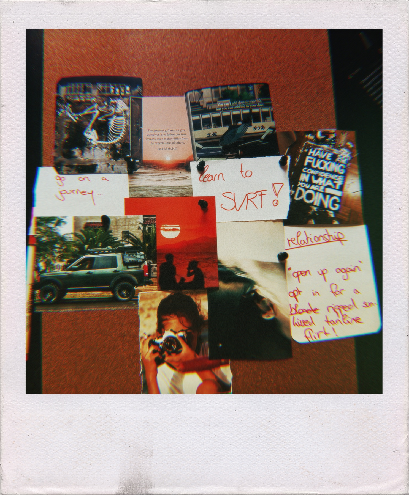
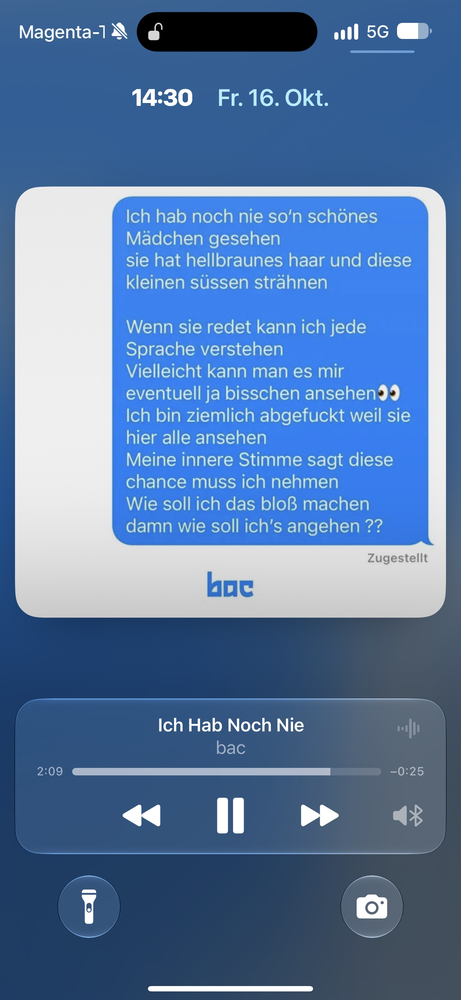

liebe hannah,
bin mir gar nicht mehr sicher, ob man es überhaupt noch aussprechen muss, aber ich hab die woche dran gebastelt, jetzt muss es raus. :)
ich glaub bei der ersten richtigen umarmung war da schon dieser spark.
und seitdem gab es einfach mehrere so momente, bei denen ich mir dachte: okay wow. diese eine umarmung, bei der so eine spannung in meinem körper war, dass ich dein piercing auf meiner haut gespürt hab, als würde das irgendwie energie in mich leiten. der erste filmabend mit schmetterlingen im bauch, bei dem ich mich ernsthaft mehr drauf konzentriert hab meine anziehung abzuwehren als auf den film.
kater, schlafsack, einfach dream scenario. happiest moment of my year.
oder wie ich mir sorgen mach, wenn du brownies futterst, noch nach mittenwald fährst und danach mit 5 stunden schlaf wieder 5 stunden autofahren willst. ich war wirklich unruhig. als ich dir angeboten hab, dass ich komme, hab ich danach alles 700 mal hinterfragt. ich werd da plötzlich zu so einem overthinker. und mensch, ich allein bin eigentlich so ein freier mensch. checkst du?!
dann dieses dämliche grinsen wenn du anrufst oder ich deine stimme hör.
the saxophones are getting louder...
und dann rote unterhose. ohhh my god. es tut mir leid.
ich kann schon hart flirten und engagement zeigen, aber am ende lande ich bei dir irgendwie immer in so zwickmühlen. mein erster impuls ist teilweise: fuck it, ich fahr jetzt los, überrasch sie. und zwei sekunden später denk ich wieder an alles außenrum. an deine situation. an aleks. an meine freundschaft zu ihm. daran, dass ich dir gerade eigentlich frieden geben will und nicht noch irgendeine sidequest, die dein leben komplizierter macht.
und zack ist meine leichtigkeit dahin.
ich hab auch gemerkt, dass du außerhalb von innsbruck teilweise zurückhaltender bist als hier. und ich hätte sicher an manchen stellen andere moves pullen können. aber ich wollte dir gerade lieber einen raum geben, in dem du einfach sein kannst. bisschen gelassene ablenkung, quatschen, scheiße erzählen, und wenn du reden willst, kannst du reden. aber ich wollte nichts forcen.
gleichzeitig fällt es mir zunehmend schwerer so zu tun, als wär da für mich einfach gar nichts.
who knows ob wir überhaupt gut viben, wenn wir das wirklich daten nennen. ich versprech dir nix und will von dir auch nix versprochen haben. vielleicht finden wir nach drei dates raus: ja lol, gute freundschaft, schlechte idee.
aber ich bin halt bauchmensch. ned kopf.
fuck around and find out.
und genau da häng ich bisschen: ich bin mir nicht sicher, ob ich dir überhaupt etwas komplett unverbindliches anbieten könnte. andererseits will ich auch nicht schon mehr draus machen, bevor überhaupt irgendwas klar ist.
i guess ich sollte einfach aufhören für uns beide zu denken.
weil... come on. qualifizierst du dich für mein moodboard?! ich hab dir das gezeigt und eigentlich ist sowas ja oberflächlicher bullshit. aber ich dachte mir nach einem jahr hab ich mir verdient, mal wieder ansprüche zu stellen. und i am not kidding: schau dir dieses fucking bild an. braunhaarig, rauchend, kamera in der hand. it is your reincarnation?! vielleicht hab ich einfach die falsche kachel zu hart manifestiert.

und ja, not mad if you get tanlines. ;)
aber das ist gleichzeitig genau der punkt: ich möchte nicht einfach nur zur richtigen zeit am richtigen ort gewesen sein.
ich will nicht, dass aus „du bist gerade verletzt, ich bin da, wir verstehen uns gut“ automatisch irgendwas wird. ich hab meine letzten zwei frauen schon aus beziehungen übernommen und ich will das nicht nochmal. am selben tag küssen oder intim sein und danach darüber diskutieren, ob der freund vielleicht doch noch eine zweite chance bekommt... been there. hat meine psyche irgendwann ziemlich gefickt und mich abgestumpft. irgendwas muss man ja lernen.
deshalb hab ich manche momente auch einfach verstreichen lassen.
nicht weil ich schüchtern bin. eher vorsichtig.
ich bin zum glück keine anfang 20 mehr. ich kann ein nein ohne drama ertragen und wir können das auch komplett nüchtern besprechen. und ja okay, mir ist es offensichtlich immer noch leichter gefallen das hier zu schreiben als einfach meinen fucking mund aufzumachen. reality check für mich inklusive.
aber ich will auch nicht alles zerdenken, bis das momentum irgendwann komplett tot ist.
weil ich es halt fühle.
und please tell me: ist das eigentlich ein naturgesetz, dass wenn man dieses knistern so deutlich spürt, das gegenüber zumindest irgendwas davon auch mitbekommt? oder kann man wirklich dermaßen delulu sein und sowas komplett alleine produzieren?
ich mein... bisschen fühlen wir es doch beide, oder?
und vielleicht ist genau deshalb dating das richtige wort für das, was ich eigentlich will.
nicht nahtlos irgendwo reinrutschen. kein ultimatum. kein „was sind wir jetzt?“. nicht sofort beziehung spielen.
einfach daten.
stufe eins: freundin vom mitbewohner, die ich inzwischen verdammt gern hab.
und dann schauen wir, ob es eine stufe zwei gibt.
mir ist eine richtig gute freundin in innsbruck gerade ehrlich gesagt genauso viel wert wie eine beziehung. ich will das eine nicht kaputtmachen, nur um unbedingt das andere zu bekommen. aber ich will auch nicht irgendwann feststellen, dass wir beide neugierig waren und keiner hatte den mut, es einfach mal in den raum zu stellen.
deshalb auch dieser ganze 2-4-6-karten-quatsch... ups, verplappert lies bis zum ende. :)
ja, ich weiß. vielleicht ruiniert sowas ein bisschen den moment. im affekt küssen wäre wahrscheinlich 100x schöner als ein fucking kartensystem dafür zu entwickeln.
aber irgendwie mag ich den gedanken, dass wir uns kennenlernen können, ohne dass einer von uns das tempo vorgeben muss. bisschen momentum behalten, ohne kopfüber irgendwo reinzuspringen.
und noch was, bevor das hier zu vernünftig wird:
du bist fucking wunderschön.
wirklich. manchmal steh ich neben dir und denk mir einfach nur: wie fucking ästhetisch kann ein mensch eigentlich sein? und nevertheless, i appreciate the effort wenn du dich schick machst. für wen auch immer. ;)

aber was mich inzwischen viel mehr erwischt, ist die hannah dahinter.
deine gedanken, deine energie, deine aura. wie wir stunden quatschen können. die seite von dir, die ich vorher gar nicht kannte.
und vielleicht ist genau das etwas, was mir bei dem ganzen hier wichtig ist:
ich will nicht deine nächste ablenkung sein. und ich will auch nicht plötzlich dein leben, deine pläne oder deine ambitionen überholen, nur weil da vielleicht was zwischen uns ist.
du sollst bitte weiterhin deine erste priorität sein.
dein leben. deine selbständigkeit. dein sport. deine musik. deine freunde. das ganze zeug, auf das du gerade wieder bock bekommst.
wenn wir daten, dann will ich da nicht im weg stehen oder irgendeinen platz einfordern. im besten fall bin ich eher der mensch daneben, der dir noch bisschen mehr rückenwind gibt. der dich supportet, dich motiviert, dir aber genauso den raum lässt dein eigenes ding zu machen.
ich brauch keine beziehung, in der zwei leute plötzlich ihr eigenes leben verlieren. ich will zwei eigenständige menschen, die sich gegenseitig größer machen.
und ja, ich will auch jemanden, mit dem ich wachsen kann. aber genauso will ich sehen, wie du dein ding machst und wächst, völlig unabhängig davon, was aus uns wird.
das ist wahrscheinlich sogar einer der gründe, warum ich gerade so vorsichtig bin. vor einem jahr hätte ich vermutlich einfach mehr moves gepullt und selbstbewusstsein gespielt. heute denk ich mir eher: let it be. gib ihr frieden. schau was passiert.
aber let it be heißt halt auch nicht: pretend you don't feel it.
und ich fühl's.
ich will nicht dein nächster typ sein, der einfach nur eine situation nutzt. und wenn du gerade einfach nur irgendeinen ficker brauchst, bin ich wahrscheinlich wirklich nicht der richtige dafür.
ich wär lieber dein liebhaber.
sososo. jetzt hab ich's gesagt.
also, graph auf den tisch:
are you in?
lass daten gehen?!
kein versprechen. kein ultimatum. kein „wir müssen jetzt irgendwas sein“.
einfach du und ich. bisschen neugierig sein. langsam. und schauen, ob das knistern außerhalb meines delulu kopfes auch funktioniert.
und falls nicht, dann kann ich damit umgehen.
aber falls doch...
dann wärs ziemlich schade gewesen, meinen mund nie aufzumachen.
auch wenn ich technisch gesehen gerade wieder geschrieben hab.
fuck. :)
So. That was probably a terrible idea.
What do you think?
Some risks are worth taking.